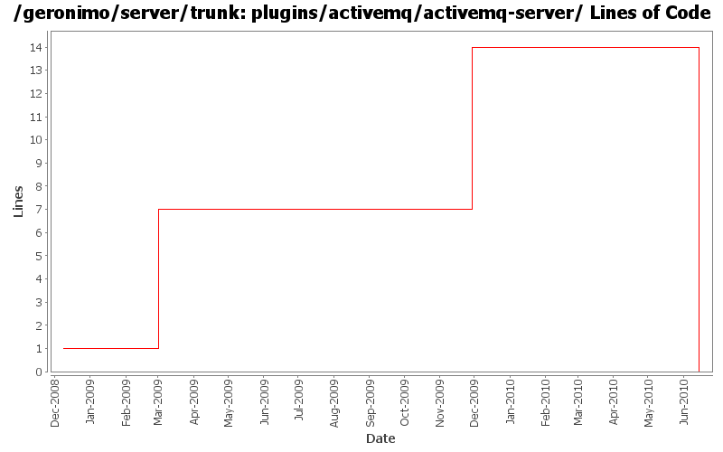

[root]/plugins/activemq/activemq-server

| Author | Changes | Lines of Code | Lines per Change |
|---|---|---|---|
| Totals | 9 (100.0%) | 27 (100.0%) | 3.0 |
| djencks | 7 (77.8%) | 27 (100.0%) | 3.8 |
| dwoods | 2 (22.2%) | 0 (0.0%) | 0.0 |
don't duplicate profile ids. Remove obsolete activemq-server to try to reduce confusion
0 lines of code changed in 1 file:
GERONIMO-5290 fix many of the deprecation warnings from maven 3
6 lines of code changed in 1 file:
GERONIMO-4566 port build changes from 2.2 to allow releasing with release plugin
7 lines of code changed in 1 file:
GERONIMO-4655 upgrade version to 3.0-SNAPSHOT, make a few things more consistent
1 lines of code changed in 1 file:
GERONIMO-4655 some pom cleanup so the release plugin might be able to branch
6 lines of code changed in 1 file:
GERONIMO-4560 run the activemq web console on geronimo
6 lines of code changed in 1 file:
GERONIMO-4538 Move boilerplate to configs, make groupIds more sensible
1 lines of code changed in 1 file:
GERONIMO-4337 rename AMQ5 modules to old names that apps expect
0 lines of code changed in 2 files: